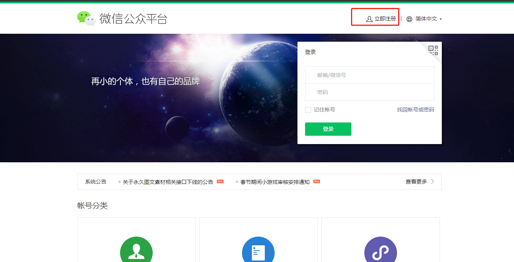
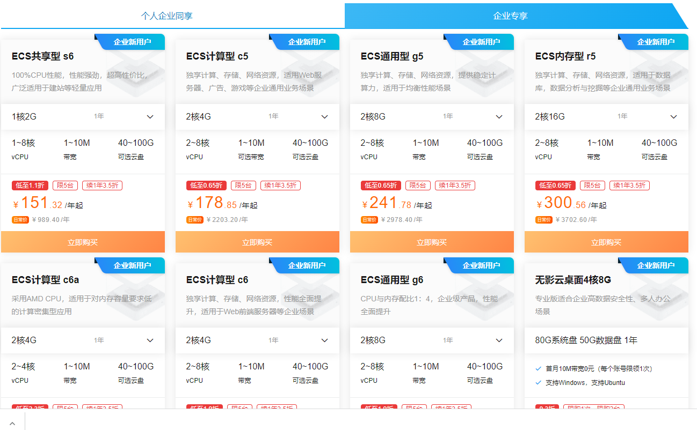
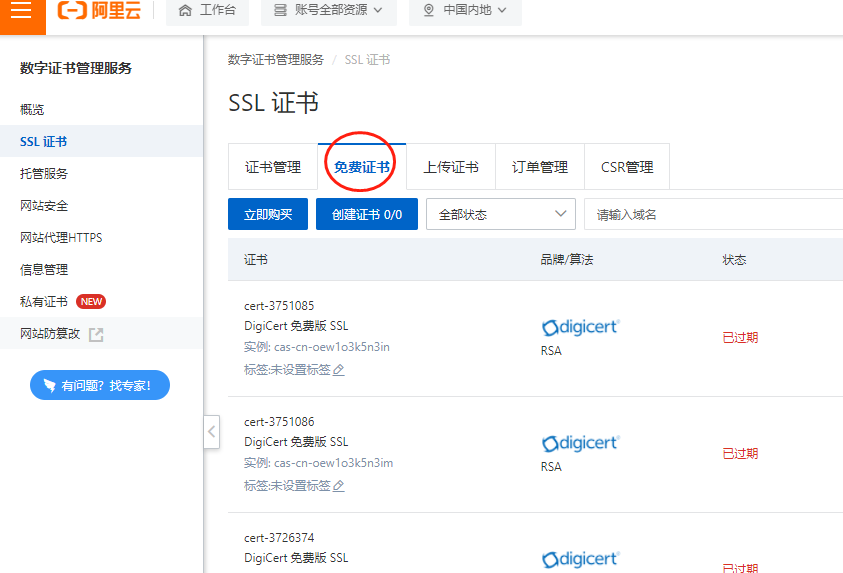

Preparatory work

Apply for official account applet
Zhonglian Network-Ticketing System sells tickets online through applets, so we must first open an official account applet. WeChat applets can be quickly opened by reusing the certification materials of the official account. An official account can open multiple applets, so we only need to certify the official account. If you already have an official account, you can directly open the applet.
- First, open the WeChat official account platform website https://mp.weixin.qq.com, and click Register Now to enter the registration page.

- Select the registered account type as a service account
 After registering the service account according to the prompts on the page, submit the certification. The certification fee is 300 yuan, and the review will generally be passed within a week.
After registering the service account according to the prompts on the page, submit the certification. The certification fee is 300 yuan, and the review will generally be passed within a week.
Open payment channel
At present, our system supports WeChat native payment and Jialian payment. Jialian payment can support UnionPay, WeChat, and Alipay, with lower rates. Please contact our staff for the opening method.
Purchase cloud server and domain name
If you don't want to buy a server, you can also host the system on the server we provide. We can provide a second-level domain name for free.
It is recommended to use Alibaba Cloud server https://www.aliyun.com Click to open the link Select the number and configuration of servers to be purchased according to the actual situation of the project.
 A single server is sufficient for small projects. It is recommended to use more than 2 servers for projects with large traffic and user volume, and the database and program are deployed separately. Of course, our system also supports cluster deployment. You can determine whether you need cluster deployment according to your actual situation.
Purchase domain name
After the domain name is registered and the real-name authentication is passed, it needs to be filed. The filing period is different in each place, and it is generally completed within 20 working days. After registering the domain name, you can open Alibaba Cloud's filing https://beian.aliyun.com/ to submit the website filing.
The applet must use a filed domain name and SSL to be accessed normally. Alibaba Cloud provides a free SSL certificate, and using a free SSL certificate can meet the requirements of the applet.

Use CDN to speed up system access
Generally, in order to save server overhead costs, the server can choose a smaller network bandwidth and improve the system access speed through CDN. Enter Alibaba Cloud's CDN console to create a domain name CDN https://cdn.console.aliyun.com/
Open SMS (optional)
If you need to send SMS notifications after users purchase tickets, you need to open Alibaba Cloud SMS.
After the above work is ready, you can deploy and install the system.